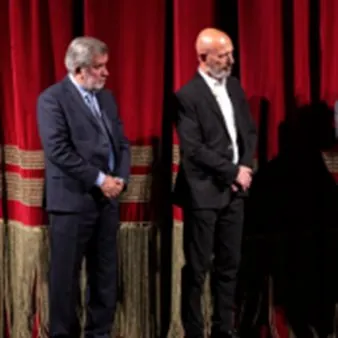

sab 28 nov · dalle 20:00
Poesiis Furlanis di îr e di vuê
28/11/2026 20:00 organizzato dal Teatri Stabil Furlan Poesiis di autôrs furlans storics sieltis e recitadis di Bepi Agostinis Poesiis di autôrs contemporanis sieltis di Federico Scarpin e letis di Massimo Somaglino Musichis e Vôs Coro Vôs de Mont Diret di Marco Maiero Bepi…
 Indicazioni
Indicazioni
- Costi e prenotazioni
- Costo non indicato · Prenotazione non indicata
- Programma
- Programma da verificare. Apri la fonte ufficiale per orari e possibili aggiornamenti.
- In caso di maltempo
- Nessuna indicazione specifica pubblicata.
- Note
- Acquisito automaticamente dalla fonte.
L’EVENTO
Descrizione completa
Poesiis di autôrs furlans storics sieltis e recitadis di Bepi Agostinis Poesiis di autôrs contemporanis sieltis di Federico Scarpin e letis di Massimo Somaglino Musichis e Vôs Coro Vôs de Mont Diret di Marco Maiero Bepi Agostinis si è batût tant che un leon, par dute la sô vite, pe fondazion di chel che lui al à simpri clamât “Teatri Stabil Furlan”, cuntune crodince cence fin te dibisugne di un popul di vê une struture stabile che i permetès di ricognossisi, apartignî, condividi une lenghe e une culture. Al è cussì in dutis lis bandis dal mont. E se chel Furlan al è un popul, al à di dimostrâlu lotant pai siei valôrs, i siei principis, la sô storie, la sô lenghe. Bepi al à cirût jutori pardut, al à vudis simpri tantis promessis, ma par tant timp la sô domande e je stade sotvalutade, svilide, metude in bande. E al è stât dome tal 2019, in gracie dal interessament volenterôs dal sindic di chê volte, Pieri Fontanini, che Bepi al à podût viodi inverât il so sium. Cumò che il Teatri Stabil Furlan al è daûr a deventâ une realtât ricognossude e preseade di ducj, si à di ricognossi a Bepi une “serade di onôr”, par ringraciâlu e onorâlu pe sô indurance e pe sô vision. Bepi Agostinis però al è furlan, e par chel no i plasin i onôrs e i ricognossiments “ocasionâi”, e cussì al à sielzût di jessi in sene, part ative de serade, a dî sù lis poesiis furlanis che i son plasudis di plui, acompagnât di Massimo Somaglino e dal côr “Vôs de Mont” direzût dal mestri Marco Maiero, par une serade che e je sì un omaç a lui, ma di là di ogni retoriche e je ancje une serade di vêr spetacul. Bepi Agostinis si è battuto come un leone, durante tutto il corso della sua vita, per la fondazione di quello che lui ha sempre chiamato ‘Teatro Stabile Friulano’, nutrendo una smisurata fiducia nei confronti della necessità da parte di un popolo di possedere una struttura stabile che gli consentisse di riconoscersi, appartenere, condividere una lingua ed una cultura. E’ così in tutte le parti del mondo. E se il Friulano è un popolo, deve dimostrarlo combattendo per i suoi valori, i suoi principi, la sua storia, la sua lingua. Bepi ha bussato a tutte le porte, ha ricevuto sempre molte promesse, ma per molto tempo la sua richiesta è stata sottostimata, svalutata, messa da parte. Ed è stato solo nel 2019, grazie al fattivo interessamento dell’allora Sindaco Pietro Fontanini, che Bepi ha potuto vedere realizzato il suo sogno. Oggi che il Teatri Stabil Furlan sta diventando una realtà riconosciuta e apprezzata da tutti, diventa necessario riconoscere a Bepi una ‘serata d’onore’, per ringraziarlo ed onorarlo per la sua tenacia e la sua visione. Bepi Agostinis però è friulano, e come tale non ama gli onori e i riconoscimenti ‘occasionali’, e così ha scelto di essere in scena, parte attiva della serata, a recitare le poesie friulane che più gli sono piaciute, accompagnato da Massimo Somaglino e dal coro ‘Vôs de Mont’ diretto dal maestro Marco Maiero, per una serata che è sì un omaggio a lui, ma al di là di ogni retorica è anche una serata di vero spettacolo.
Biglietto intero: € 15,00
Biglietto ridotto: € 10,00 (riservato a under 25, over 65 e possessori di un biglietto "intero" di uno spettacolo precedente)
Biglietto super-ridotto: € 5,00 (riservato a under 12, abbonati ad altre stagioni teatrali e possessori di un biglietto "ridotto" di uno spettacolo precedente)
Riduzione: € 2,00 (riservata a operatori del settore e artisti, persone con disabilità e possessori di un biglietto "super-ridotto" di uno spettacolo precedente) Per informazioni: info@teatristabilfurlan.it / tel 392 3273719
www.teatristabilfurlan.it
IL PROGRAMMA
Programma e orari
Appuntamenti raccolti dalle fonti elencate. Dove manca un orario, non è ancora disponibile in questa scheda.
Programma pubblicato
- Dal 2026-11-28 al 2026-11-28
INFORMAZIONI UTILI
Prima di partire
- Controllare la fonte prima di partire.
ORGANIZZAZIONE